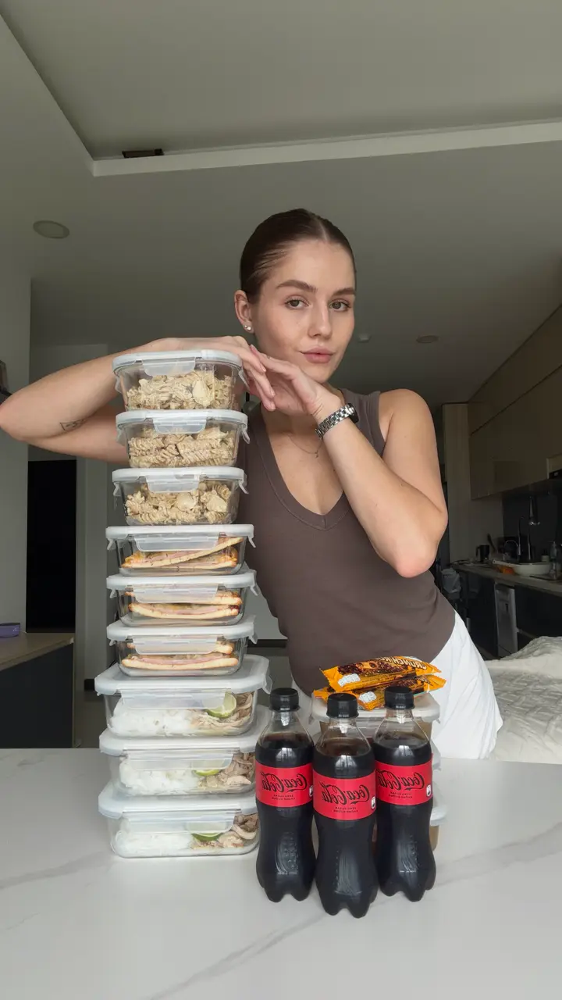
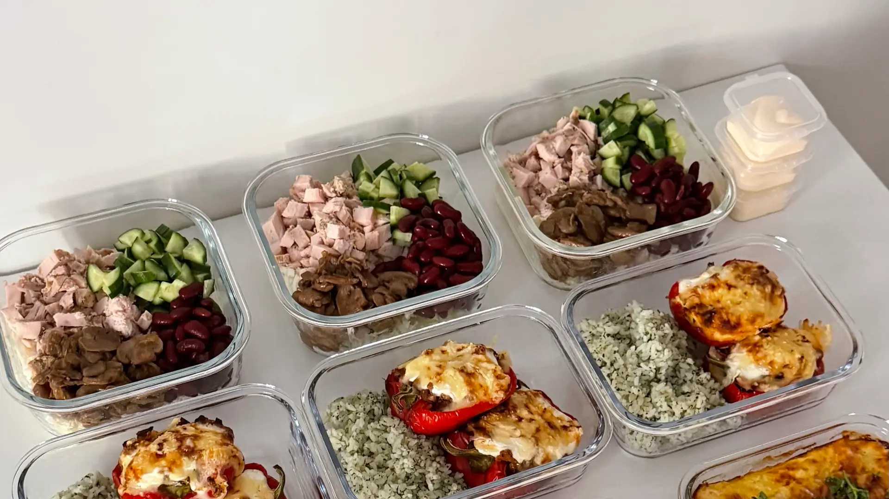
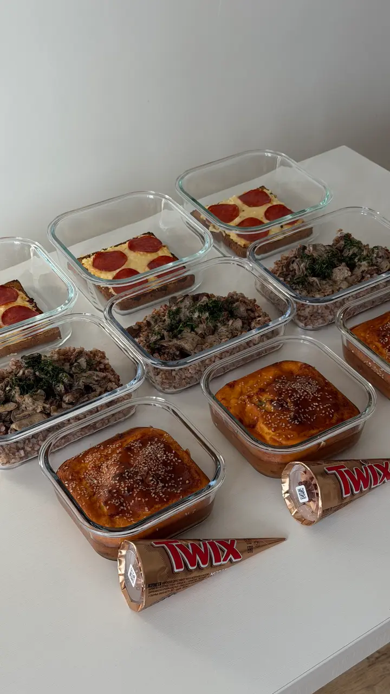
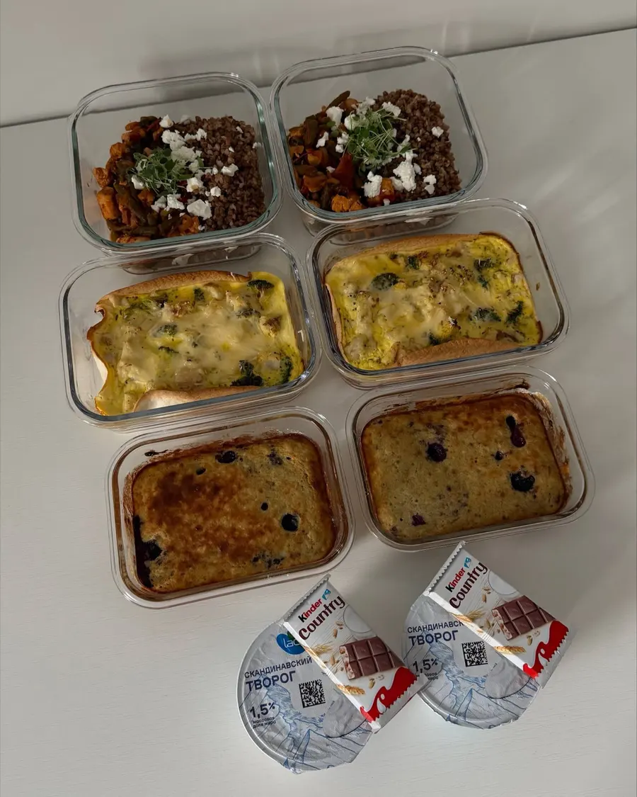
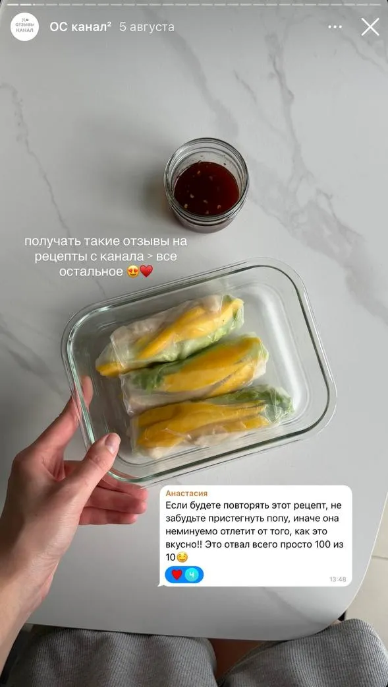
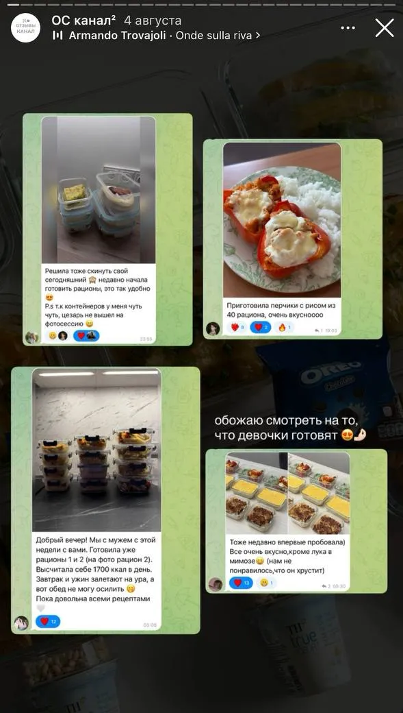

2 часау плиты — и еда готова на 3 дня

доступ к рационам
Оплата в Telegram-боте — ссылка на закрытый канал придёт сразу после оплаты.
рационы с кбжу · 4 500+ участниц
Готовые рационы от нутрициолога Кристины Василиу: КБЖУ посчитано, список продуктов собран. Два часа у плиты — и три дня ты ешь пасту и десерты, оставаясь в дефиците.

как это работает
2 часау плиты — и еда готова на 3 дня
−13 кгКристина похудела на пасте, а не на гречке

0 подсчётовКБЖУ и граммовки уже в каждом рецепте

Twix в менюсладкое вписано в калории, срываться не на что
знакомо?
Девять вечера, ты у холодильника. В сохранённых — сотни рецептов, а плана на завтра нет. В итоге доставка, печенька и «начну с понедельника».
Срываются не от слабости, а от усталости каждый день решать, что поесть. Это решение мы берём на себя.


58+ готовых меню на 2–3 дня под твою калорийность — от 1400 до 1800 ккал. Завтраки, обеды, ужины и перекусы уже расписаны.
Корзина продуктов к рациону собрана заранее — с граммовками. Один поход в магазин и ничего лишнего в чеке.
1,5–2 часа по пошаговому видео: что ставить первым, что готовить параллельно. Справится даже тот, кто никогда не готовил.
Раскладываешь всё по контейнерам — и до следующей готовки вопрос «что поесть» больше не возникает.
почему это работает

Граммовки рассчитаны так, что ты сыта, а вес уходит. Без весов и приложений.
Шоколадка уже вписана в калории — её не хочется съесть тайком ночью.
Еда ждёт в холодильнике. Силе воли просто не на что тратиться.

Муж и дети едят то же самое, только в своих порциях. Готовить дважды не нужно.
подстрой под себя
Выбери свою цифру и посмотри реальный рацион из канала. Нужна точная норма — в канале есть промпт, который пересчитает порции.

1600ккал
В рационах есть паста, пицца, хачапури, лазанья, супы, брауни, креветки, роллы с манго и шоколадки — это не диета и не марафон.
что внутри
Закрытый Telegram-канал: ищешь рацион по хэштегу калорийности — и готовишь.
кто я
Я сама сбросила 13 кг — не на гречке, а на нормальной вкусной еде. Потом выучилась на нутрициолога и собрала систему, по которой живу до сих пор.
Мой муж Макс раньше вообще не готовил. Теперь сам готовит рационы по видео — и минус 9 кг.
отзывы
Первое актуальное с отзывами в Instagram уже заполнилось — пришлось завести второе.

«Если будете повторять этот рецепт, не забудьте пристегнуть попу — иначе она отлетит от того, как это вкусно!! 100 из 10»
Анастасия

«Мы с мужем с этой недели с вами. Высчитала себе 1700 ккал в день — завтрак и ужин залетают на ура»
участница

«Приготовила перчики с рисом из 40 рациона, очень вкусноооо»
участница

«Самая лучшая покупка — подписка на этот канал 🙏»
Кристина К.
тарифы
Вся база рационов — в обоих тарифах. Ссылку на канал бот пришлёт сразу после оплаты.
1 790 ₽
один платёж — и без продлений
1 190 ₽
≈ 400 ₽ в месяц — дешевле одной доставки
вопросы
Нет. Паста, пицца, выпечка, супы и десерты — всё вписано в КБЖУ. Худеешь за счёт порций, а не запретов.
Да. Каждый рецепт показан на видео, последовательность расписана по шагам. Мой муж Макс до этого не готовил вообще.
1,5–2 часа на рацион, которого хватает на 2–3 дня.
Рационы рассчитаны на 1400–1800 ккал. Выбираешь ближайший к своей норме или пересчитываешь порции готовым промптом из канала.
Да. Блюда одни, порции у каждого свои — готовить дважды не нужно.
На тарифе «навсегда» — нет, это разовый платёж. «3 месяца» продлевается автоматически, отменить можно в боте в любой момент.
«В жизни и так много сложностей. Пусть хотя бы питание будет простым».— Кристина